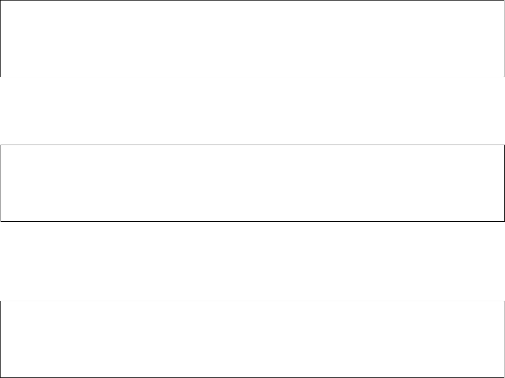
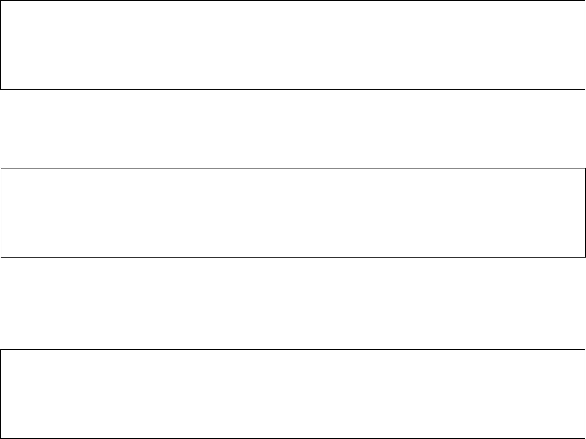
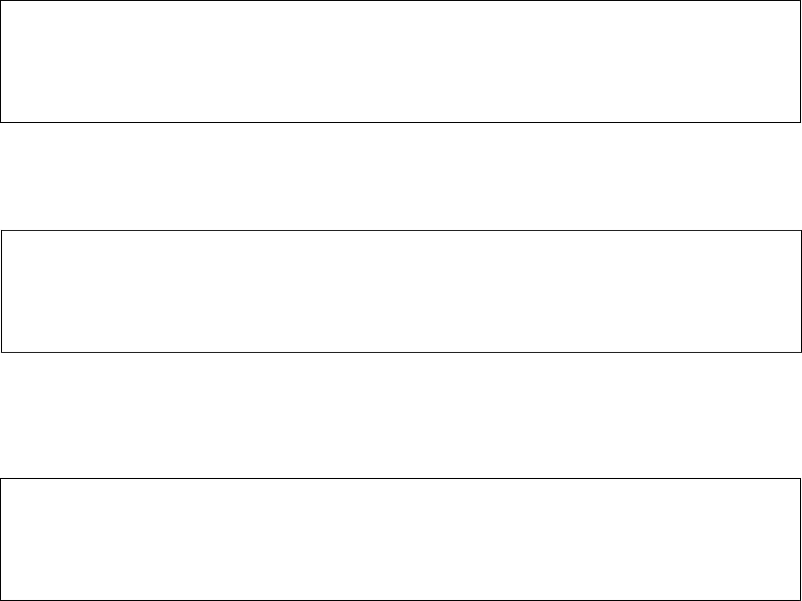
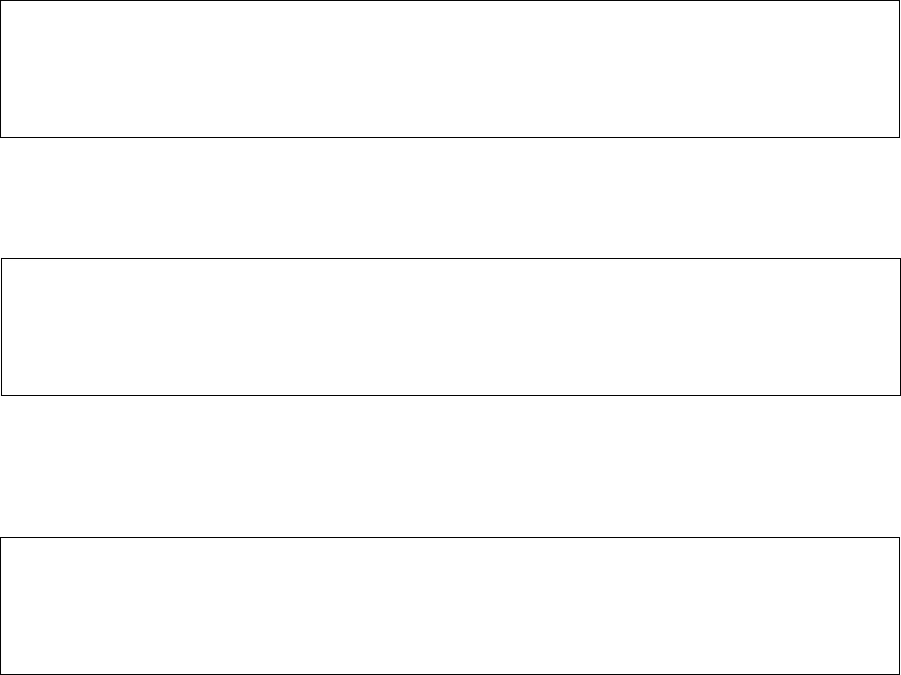

We are gitCommitMe, and we provide an informal way of meeting and networking with other people in your technical field. To do this, you're given the ability to sift through (potentially semi-)random GitHub profiles, and fork the ones that you find interesting. If those people also fork your profile, your profiles will receive a merge request, which will allow you to chat with them, as well as anyone else that you've merged with. You can also earn badges for being a skilled-enough gitCommitter, such as 10 Merges In A Month.
The idea for gitCommitMe was inspired by our two primary passions: our love of GitHub, and our love of networking. While there are plenty of apps that allow you to communicate with other professionals, they either are too formal to allow real networking (ie. Stack Overflow), or they're too broad for just technical professionals (ie. LinkedIn). And although apps like IRC are still popular among the IT crowds (yes, that was definitely a subtle reference to an amazing show), there's no real way of knowing the true credibility of who you're speaking with. Our idea for gitCommitMe was that it would solve that gap - allowing you to informally communicate with people who have been vouched for by the power of GitHub.

OH. EM. GEE. Hot guys who also have C repos? Yes PLEASE! This is the best service I've ever used!
I actually really enjoy using this app just to find other friends that are also web developers, especially since I can choose to talk to people that use the same languages as me, or write in completely foreign ones (the Erlang peeps are mad cray, tho).


I'm not lying guys. I have women fork my repo almost every day, and it's awesome! I've even merged with a few different people ;)
We've made the process as easy as possible. All you have to do is log in with your GitHub account, using the button below to access our login page (if you don't have a GitHub account, it'll take no time at all to set one up). That's it. We won't need any credit card info, nor will we store any of your personal information other than what GitHub has publicly available.
Sign UpWant to talk to someone who can personally match you up with your soulmate without you having to do any work? Well, unfortunately we haven't gotten that good yet. We would still love to hear from you though. We've even included a snazzy little contact form to make your life easier!